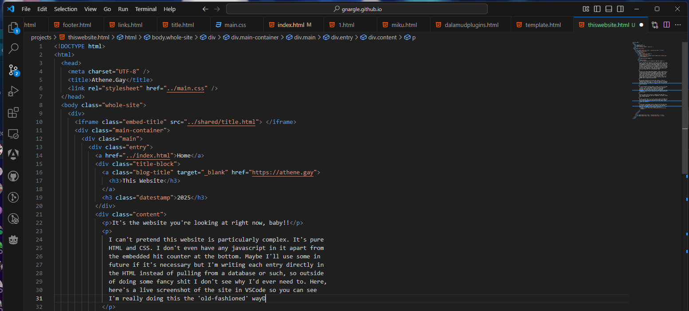

This Website
2025
It's the website you're looking at right now, baby!!
I can't pretend this website is particularly complex. It's pure HTML and CSS. I don't even have any javascript in it apart from the embedded hit counter at the bottom. Maybe I'll use some in future if it's necessary but I'm writing each entry directly in the HTML instead of pulling from a database or such, so outside of doing some fancy shit I don't see why I'd ever need to. Here, here's a live screenshot of the site in VSCode so you can see I'm really doing this the 'old-fashioned' way:
{kind=link}
The web is too damn complicated nowadays. I don't think this is a particularly controversial statement. Everyone seems to want to make everything into a single-page application, host with node or some .net backing with a big MVC structure behind it, have myriad front-end technologies to make everything oh-so-slick. And sure, there's a place for that. I work for a company whose main product is an Angular SPA with a big .net backend that is hugely multifunctional.
But personal websites do not need that, really. I kind of fundamentally disagree with it. A portfolio website can impress with your talent for design, for sure, but when you're working on something like this, where it's just for you - is any of it really necessary?
All that overhead certainly makes it slower. The web is so damn slow now. I got gigabit internet recently, which has certainly been revelatory for streaming and steam game downloads, but actual day-to-day web use is basically unimpacted. I can download sites faster, theoretically, but the framework is doing so much internally that it makes practically no difference.
And for a small site of my own, I simply do not want that. I want something that feels fast and responsive. And what's faster than a static website?
So this is what that is, in a very classic style. Pure HTML and CSS. Iframes for stuff like the links and footer bars. Manual linking and organisation. A marquee tag for the header, gotta respect the classics.
I even have a links panel, which I hope to fill out with links to friends' and acquaintances little homes on the internet. Webrings were fuckin' cool and we've lost them, so let's bring them back. If you want to be included, shout me on bluesky.